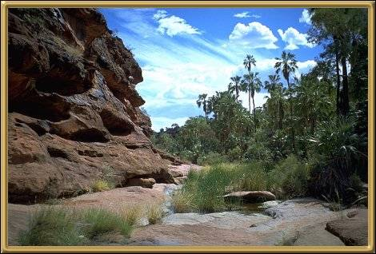

Photographer: Peter Simms
Palm Valley is the only place in the world where you will find these palms, ancient Livistona Mariae Palms, and the area is very carefully preserved. Finding the palms in the middle of such an arid area is startling and somewhat amazing! Certainly a place you don't want to miss.